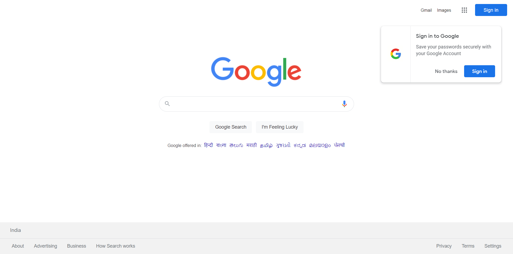

com.sourcepro.Login.LoginIndex
com.sourcepro.Login.LoginIndex
login
org.openqa.selenium.NoSuchElementException: Timed out after 15 seconds. Unable to locate the element
at org.openqa.selenium.support.pagefactory.AjaxElementLocator.findElement(AjaxElementLocator.java:99)
at org.openqa.selenium.support.pagefactory.internal.LocatingElementHandler.invoke(LocatingElementHandler.java:39)
at jdk.proxy2/jdk.proxy2.$Proxy20.sendKeys(Unknown Source)
at com.sourcepro.Login.LoginIndexPage.doLogin(LoginIndexPage.java:42)
at com.sourcepro.Login.LoginIndex.login(LoginIndex.java:51)
at java.base/java.util.ArrayList.forEach(ArrayList.java:1511)
Caused by: org.openqa.selenium.NoSuchElementException: no such element: Unable to locate element: {"method":"xpath","selector":"//input[@formcontrolname='userName']"}
(Session info: chrome=102.0.5005.115)
For documentation on this error, please visit: https://selenium.dev/exceptions/#no_such_element
Build info: version: '4.2.1', revision: 'ac4d0fdd4a'
System info: host: 'LAPTOP-3NPM5AHR', ip: '192.168.1.157', os.name: 'Windows 10', os.arch: 'amd64', os.version: '10.0', java.version: '18.0.1.1'
Driver info: org.openqa.selenium.chrome.ChromeDriver
Command: [715ae4e8036137c42728472c882c533e, findElement {using=xpath, value=//input[@formcontrolname='userName']}]
Capabilities {acceptInsecureCerts: false, browserName: chrome, browserVersion: 102.0.5005.115, chrome: {chromedriverVersion: 102.0.5005.61 (0e59bcc00cc4..., userDataDir: C:\Users\patil\AppData\Loca...}, goog:chromeOptions: {debuggerAddress: localhost:56988}, networkConnectionEnabled: false, pageLoadStrategy: normal, platformName: WINDOWS, proxy: Proxy(), se:cdp: ws://localhost:56988/devtoo..., se:cdpVersion: 102.0.5005.115, setWindowRect: true, strictFileInteractability: false, timeouts: {implicit: 0, pageLoad: 300000, script: 30000}, unhandledPromptBehavior: ignore, webauthn:extension:credBlob: true, webauthn:extension:largeBlob: true, webauthn:virtualAuthenticators: true}
Session ID: 715ae4e8036137c42728472c882c533e
at org.openqa.selenium.remote.codec.w3c.W3CHttpResponseCodec.createException(W3CHttpResponseCodec.java:200)
at org.openqa.selenium.remote.codec.w3c.W3CHttpResponseCodec.decode(W3CHttpResponseCodec.java:133)
at org.openqa.selenium.remote.codec.w3c.W3CHttpResponseCodec.decode(W3CHttpResponseCodec.java:53)
at org.openqa.selenium.remote.HttpCommandExecutor.execute(HttpCommandExecutor.java:184)
at org.openqa.selenium.remote.service.DriverCommandExecutor.invokeExecute(DriverCommandExecutor.java:167)
at org.openqa.selenium.remote.service.DriverCommandExecutor.execute(DriverCommandExecutor.java:142)
at org.openqa.selenium.remote.RemoteWebDriver.execute(RemoteWebDriver.java:551)
at org.openqa.selenium.remote.ElementLocation$ElementFinder$2.findElement(ElementLocation.java:162)
at org.openqa.selenium.remote.ElementLocation.findElement(ElementLocation.java:60)
at org.openqa.selenium.remote.RemoteWebDriver.findElement(RemoteWebDriver.java:369)
at org.openqa.selenium.remote.RemoteWebDriver.findElement(RemoteWebDriver.java:361)
at org.openqa.selenium.support.pagefactory.DefaultElementLocator.findElement(DefaultElementLocator.java:70)
at org.openqa.selenium.support.pagefactory.AjaxElementLocator.access$001(AjaxElementLocator.java:39)
at org.openqa.selenium.support.pagefactory.AjaxElementLocator$SlowLoadingElement.isLoaded(AjaxElementLocator.java:165)
at org.openqa.selenium.support.ui.SlowLoadableComponent.get(SlowLoadableComponent.java:72)
at org.openqa.selenium.support.pagefactory.AjaxElementLocator.findElement(AjaxElementLocator.java:95)
... 34 more
... Removed 32 stack frames
(Do Login)
logout
org.openqa.selenium.TimeoutException: Expected condition failed: waiting for element to be clickable: Proxy element for: AjaxElementLocator 'By.xpath: //div[@class='user-info text-right']' (tried for 20 second(s) with 500 milliseconds interval)
at org.openqa.selenium.support.ui.WebDriverWait.timeoutException(WebDriverWait.java:87)
at org.openqa.selenium.support.ui.FluentWait.until(FluentWait.java:231)
at com.sourcepro.init.Common.clickableElement(Common.java:582)
at com.sourcepro.Login.LoginIndexPage.logout(LoginIndexPage.java:91)
at com.sourcepro.Login.LoginIndex.logout(LoginIndex.java:101)
at java.base/java.util.ArrayList.forEach(ArrayList.java:1511)
Caused by: org.openqa.selenium.NoSuchElementException: Timed out after 15 seconds. Unable to locate the element
at org.openqa.selenium.support.pagefactory.AjaxElementLocator.findElement(AjaxElementLocator.java:99)
at org.openqa.selenium.support.pagefactory.internal.LocatingElementHandler.invoke(LocatingElementHandler.java:39)
at jdk.proxy2/jdk.proxy2.$Proxy20.isDisplayed(Unknown Source)
at org.openqa.selenium.support.ui.ExpectedConditions.elementIfVisible(ExpectedConditions.java:307)
at org.openqa.selenium.support.ui.ExpectedConditions.access$000(ExpectedConditions.java:40)
at org.openqa.selenium.support.ui.ExpectedConditions$10.apply(ExpectedConditions.java:293)
at org.openqa.selenium.support.ui.ExpectedConditions$10.apply(ExpectedConditions.java:290)
at org.openqa.selenium.support.ui.ExpectedConditions$23.apply(ExpectedConditions.java:660)
at org.openqa.selenium.support.ui.ExpectedConditions$23.apply(ExpectedConditions.java:656)
at org.openqa.selenium.support.ui.FluentWait.until(FluentWait.java:208)
... 33 more
Caused by: org.openqa.selenium.NoSuchElementException: no such element: Unable to locate element: {"method":"xpath","selector":"//div[@class='user-info text-right']"}
(Session info: chrome=102.0.5005.115)
For documentation on this error, please visit: https://selenium.dev/exceptions/#no_such_element
Build info: version: '4.2.1', revision: 'ac4d0fdd4a'
System info: host: 'LAPTOP-3NPM5AHR', ip: '192.168.1.157', os.name: 'Windows 10', os.arch: 'amd64', os.version: '10.0', java.version: '18.0.1.1'
Driver info: org.openqa.selenium.chrome.ChromeDriver
Command: [715ae4e8036137c42728472c882c533e, findElement {using=xpath, value=//div[@class='user-info text-right']}]
Capabilities {acceptInsecureCerts: false, browserName: chrome, browserVersion: 102.0.5005.115, chrome: {chromedriverVersion: 102.0.5005.61 (0e59bcc00cc4..., userDataDir: C:\Users\patil\AppData\Loca...}, goog:chromeOptions: {debuggerAddress: localhost:56988}, networkConnectionEnabled: false, pageLoadStrategy: normal, platformName: WINDOWS, proxy: Proxy(), se:cdp: ws://localhost:56988/devtoo..., se:cdpVersion: 102.0.5005.115, setWindowRect: true, strictFileInteractability: false, timeouts: {implicit: 0, pageLoad: 300000, script: 30000}, unhandledPromptBehavior: ignore, webauthn:extension:credBlob: true, webauthn:extension:largeBlob: true, webauthn:virtualAuthenticators: true}
Session ID: 715ae4e8036137c42728472c882c533e
at org.openqa.selenium.remote.codec.w3c.W3CHttpResponseCodec.createException(W3CHttpResponseCodec.java:200)
at org.openqa.selenium.remote.codec.w3c.W3CHttpResponseCodec.decode(W3CHttpResponseCodec.java:133)
at org.openqa.selenium.remote.codec.w3c.W3CHttpResponseCodec.decode(W3CHttpResponseCodec.java:53)
at org.openqa.selenium.remote.HttpCommandExecutor.execute(HttpCommandExecutor.java:184)
at org.openqa.selenium.remote.service.DriverCommandExecutor.invokeExecute(DriverCommandExecutor.java:167)
at org.openqa.selenium.remote.service.DriverCommandExecutor.execute(DriverCommandExecutor.java:142)
at org.openqa.selenium.remote.RemoteWebDriver.execute(RemoteWebDriver.java:551)
at org.openqa.selenium.remote.ElementLocation$ElementFinder$2.findElement(ElementLocation.java:162)
at org.openqa.selenium.remote.ElementLocation.findElement(ElementLocation.java:60)
at org.openqa.selenium.remote.RemoteWebDriver.findElement(RemoteWebDriver.java:369)
at org.openqa.selenium.remote.RemoteWebDriver.findElement(RemoteWebDriver.java:361)
at org.openqa.selenium.support.pagefactory.DefaultElementLocator.findElement(DefaultElementLocator.java:70)
at org.openqa.selenium.support.pagefactory.AjaxElementLocator.access$001(AjaxElementLocator.java:39)
at org.openqa.selenium.support.pagefactory.AjaxElementLocator$SlowLoadingElement.isLoaded(AjaxElementLocator.java:165)
at org.openqa.selenium.support.ui.SlowLoadableComponent.get(SlowLoadableComponent.java:72)
at org.openqa.selenium.support.pagefactory.AjaxElementLocator.findElement(AjaxElementLocator.java:95)
... 42 more
... Removed 32 stack frames
F:\SourcePro POC\SourceProNew\Build\Temp.xml
<?xml version="1.0" encoding="UTF-8"?>
<!DOCTYPE suite SYSTEM "https://testng.org/testng-1.0.dtd">
<suite name="SourcePro" guice-stage="DEVELOPMENT" verbose="0">
<parameter name="ExecutionByXML" value="true"/>
<parameter name="URL" value="http://google.com"/>
<parameter name="Browser" value="chrome"/>
<listeners>
<listener class-name="com.sourcepro.utility.CustomDetailReporter"/>
<listener class-name="com.sourcepro.utility.CustomReporterBuildSummary"/>
<listener class-name="com.sourcepro.utility.CustomReporter"/>
<listener class-name="com.sourcepro.reports.ExtentReportListener"/>
</listeners>
<test thread-count="5" name="Login_Do Loginnnnnn" verbose="0">
<classes>
<class name="com.sourcepro.Login.LoginIndex">
<methods>
<include name="login"/>
</methods>
</class> <!-- com.sourcepro.Login.LoginIndex -->
</classes>
</test> <!-- Login_Do Loginnnnnn -->
<test thread-count="5" name="Logout_Logout" verbose="0">
<classes>
<class name="com.sourcepro.Login.LoginIndex">
<methods>
<include name="logout"/>
</methods>
</class> <!-- com.sourcepro.Login.LoginIndex -->
</classes>
</test> <!-- Logout_Logout -->
</suite> <!-- SourcePro -->
Tests for SourcePro
- Login_Do Loginnnnnn (1 class)
- Logout_Logout (1 class)
Groups for SourcePro
Times for SourcePro
Total running time: 2 minutes
Reporter output for SourcePro
login
Open URL : http://google.com
Do login with valid email and password.
Do login with valid username and password.

Login_Do Loginnnnnn is failed.
logout
Click on drop down and click on logout.
 Logout_Logout is failed.
Logout_Logout is failed.
Logout_Logout is failed.
2 ignored methods
com.sourcepro.Login.LoginIndex
login
logout
logout
Methods in chronological order
com.sourcepro.Login.LoginIndex
fetchSuite(org.testng.TestRunner@787d1f9c)
0 ms
fetchSuiteConfiguration(org.testng.TestRunner@2becfd4c)
1575 ms
setUp(public void com.sourcepro.Login.LoginIndex.login() throws java.io.IOException,java.awt.AWTException,...)
1588 ms
login
6111 ms
tearDown([TestResult name=login status=FAILURE method=LoginIndex.login()[pri:0, instance:com.sourcepro.Login....)
47757 ms
fetchSuiteConfiguration(org.testng.TestRunner@787d1f9c)
48012 ms
setUp(public void com.sourcepro.Login.LoginIndex.logout() throws java.io.IOException, org.testng.TestRunne...)
48013 ms
logout
48995 ms
tearDown([TestResult name=logout status=FAILURE method=LoginIndex.logout()[pri:0, instance:com.sourcepro.Logi...)
130585 ms
postConfigue
130746 ms